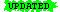

No quotes on FortuneCookies. |
| 2015-10-24 | |||||
| AllPages | 18:03 | anonymous [1-4] | |||
|
marks older pages that have at least one backup version stored (click for an author diff) |
 |
marks pages edited since you set your bookmark (click for a bookmark diff) |
|
marks pages created since you set your bookmark, and were not edited after creation |
|
marks page deletions |
This page contains a list of recent changes in this wiki.